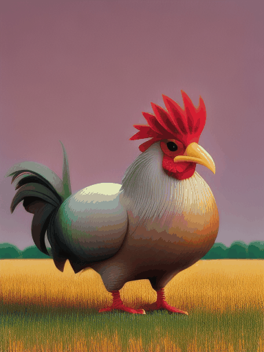

動画生成機能の使い方ガイド
AiCassoの動画生成機能を使えば、見たいものを簡単に説明するだけで動画を作成できます。アイデアを入力するだけで、AiCassoがそれを動画にしてくれます！
動作の仕組み：
プロンプト：
"一人で野原にいる3Dアニメーションの鶏が、食べて幸せそうにしている。50のデノイジングステップでポートレート動画にして。"
結果：

プロンプト：
"野原にいる鶏のカートゥーン、横長のサイズで。"
結果：
プロンプト：
"一人で野原にいる鶏。自然な感じを与えて。"
結果：
追加オプション
動画を微調整したいですか？以下の設定を試してみてください：
- フレーム数：動画に含まれるフレーム（個々の画像）の数を選択します。最大25フレームまで設定でき、デフォルトは16です。
- デノイジングステップ数：動画の滑らかさを制御します。ステップ数が多いほど、動画は滑らかになります。最大50ステップまで設定でき、デフォルトは20です。
- ガイダンススケール：動画が説明にどれだけ忠実であるかを助けます。数値が高いほど、プロンプトに従います。範囲は0から8で、デフォルトは8です。
- クリップスキップ：異なる動画スタイルのために特定のレイヤーをスキップします。デフォルトではレイヤーはスキップされませんが、最大2つまでスキップできます。
- アップスケール幅と高さ：解像度を調整することで動画を大きくできます。デフォルトは1024x1024ピクセルですが、ニーズに合わせて調整できます。
- アップスケール強度：アップスケール時に動画がどれだけ調整されるかを変更します。デフォルトは1ですが、より多くの違いを見たい場合は調整できます。
- アップスケールガイダンススケール：アップスケーリングプロセスをガイドします。範囲は0から8で、デフォルトは8です。
- アップスケール推論ステップ：動画をアップスケールするために取られるステップ数です。ステップ数が多いほど、滑らかなアップスケーリングになります。最大50ステップで、デフォルトは20です。
- 改善されたサンプリング：より洗練された動画を希望しますか？これをオンにしてください。デフォルトではオフです。
- 改善されたサンプリングシード：改善されたサンプリングで毎回同じ動画を生成するために使用します。オプションで、デフォルトではオフです。
- フレーム毎秒（FPS）：動画の速度を設定します。デフォルトは16 FPSですが、最大16まで調整できます。
- 動画モデル：動画のスタイルを選択します。オプションには：
- デフォルト：標準の動画モデル。
- カートゥーン：カートゥーン風の動画スタイル。
- 自然：リアルで自然な見た目の動画スタイル。
- アニメーション3D：3Dアニメーションの動画スタイル。
これらの設定はオプションであることを忘れないでください。動画生成機能はシンプルな説明だけでも素晴らしい結果を出しますので、自由に試してみて、何を作成できるか見てみてください！